Volatility Masterclass 1 — Why Volatility Is Risk AND Reward
Volatility is the fluctuation in prices and returns — the risk you must seek out to earn any return at all.
Chris Quill reframes volatility as both risk and opportunity: without it there are no capital gains, but seeking it blindly is a mistake. Through a coin-toss game, the Sharpe ratio, and a live Tesla option chain, he shows why we gravitate toward better risk-adjusted returns and why implied volatility — the only unknown in option pricing — must be checked, not taken for granted.
The gist
- Volatility = fluctuations in asset prices/returns, and it is BOTH risk AND reward — without it there would be no chance of generating capital gains, so we NEED it.
- Coin-toss Game 1: choice A = +$200 heads / −$100 tails (expected return ($200×0.5)+(−$100×0.5) = $50/toss) beats B = +$25 flat — pick A on higher expected value.
- Coin-toss Game 2: A = +$300 heads / −$150 tails (($300×0.5)+(−$150×0.5) = $75) vs B = +$75 flat ($75×1) — SAME expected value, so pick B for less volatility.
- Cumulative-profit path: option A is jagged (peaks around $1,950), option B is a linear +$75/toss line — both land near ~$1,500, but A carries risk for no extra reward.
- Realized vol = a stock's historical movement (ATR daily/weekly/monthly, or std-dev of returns); Implied vol = expected FUTURE movement, backed out of option prices — the ONLY unknown in Black-Scholes.
- Trader 1 = 20% return / 30% annualized SD → Sharpe 0.66; Trader 2 = 19% return / 13% SD → Sharpe 1.46 — Trader 2 is better risk-adjusted (Sharpe = return ÷ SD).
- Sharpe bands: 95% of retail are negative; profitable up to ~1; good >1; professional ≥1.5 (capping ~2); high-level algos 1.5–3; long-only bull ≈ 1 — Long/Short + option hedges lowers risk while keeping/raising return.
- TSLA (Hist Vol 36.55%, last ~$351.08, 350-strike calls, dividends zero): 9-day mid ~$9, 37-day ~$17.50, 324-day (Jan 18th 2019) ~$55 — about 6× the 9-day and 3× the 37-day; annualized IV roughly equal for 9d/37d but 3–4 points higher for the 324-day.
What volatility is — and why it's risk AND reward
- Volatility refers to the fluctuations in asset prices and asset returns.
- A common mistake is to think of it only as risk — but it is also opportunity: if we didn't have volatility we couldn't trade and there would be no chance of capital gains. We NEED it.
- Analysing volatility helps decide the market environment, profitable time horizons, profit targets, and risk limits (leverage and stops).
- The greater the volatility, the WIDER you set targets and stops — but the LESS leverage you need, since the asset already provides the opportunity.
Quill opens by insisting volatility be held in two hands at once. It is the source of drawdown risk, but it is equally the source of every return — remove it and there is nothing to trade.
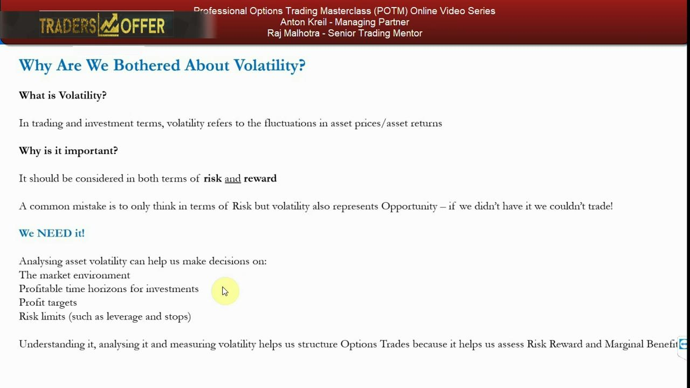
The coin-toss game — Round 1: expected value wins
- Choice A: receive $200 for every heads, pay $100 for every tails.
- Choice B: receive $25 for every coin toss, no matter what.
- Expected return of A = ($200×0.5) + (−$100×0.5) = $50 per toss; B = $25 per toss.
- The rational choice is A — its expected return per toss is higher.
Expected return is the probability-weighted average of the outcomes. In Round 1 the volatile option A also pays more on average, so it simply wins.
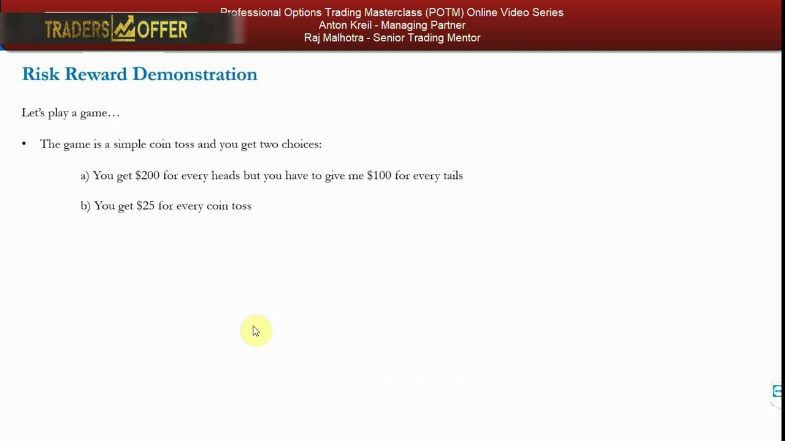
Round 2 — same expected value, less volatility wins
- New choice A: +$300 for every heads, −$150 for every tails.
- New choice B: +$75 for every coin toss.
- Expected return of A = ($300×0.5) + (−$150×0.5) = $75; B = ($75×1) = $75 — identical.
- The rational choice is now B: same expected return with less volatility.
- What if the game is changed or stopped after you take a loss? Why risk periods of losses with no additional reward?
When expected values tie, volatility is the deciding factor. The volatile path exposes you to loss stretches you are not compensated for — so you take the smooth one.
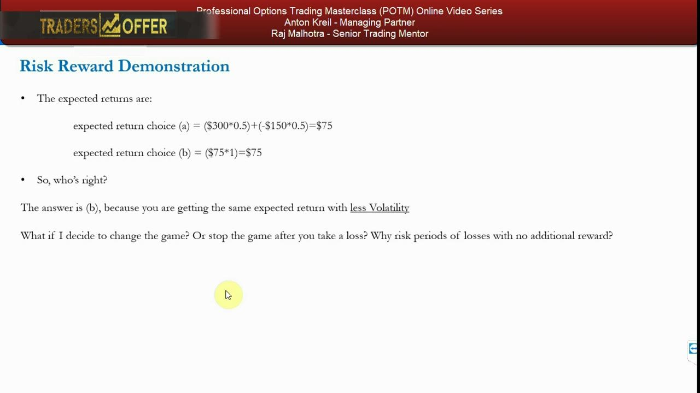
The cumulative-profit chart — jagged vs linear
- A simulated path of cumulative dollar profit over 20 coin tosses for each choice.
- Option A (volatile) rises and falls repeatedly — dipping low early, spiking to a peak of ~$1,950, then settling near ~$1,500.
- Option B (linear) climbs a straight +$75-per-toss line to ~$1,500.
- Both end at roughly the same cumulative ~$1,500 — but A carried risk the whole way for no extra reward.
- Apply leverage and it becomes obvious: you'd leverage B indefinitely, while A would risk bankruptcy for no additional expected return.
Even in a favourable draw for A, the two paths converge on the same endpoint. The volatility of A is pure downside — the exact intuition professionals use to prefer smooth compounding.
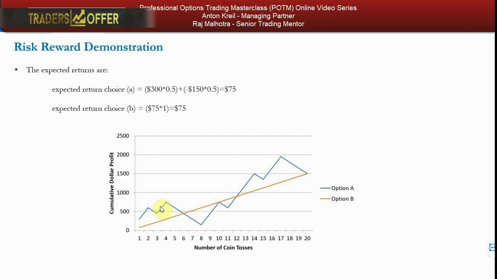
Why it's relevant — realized vs implied volatility
- Realized volatility measures how much an asset USED to move — via ATR (daily/weekly/monthly) or the std-dev distribution of historical returns.
- Implied volatility measures how much it's EXPECTED to move in future — backed out of option prices.
- Realized vol is taught in the PTM series; implied vol is the focus here — both matter for measuring risk and reward on a trade's time frame.
- Volatility is also a measure of risk and reward across an entire portfolio, and of a portfolio's or trader's return ÷ risk.
- In reality there are no free lunches — almost all returns are associated with a level of risk, so we must SEEK volatility to gain returns.
The game generalizes: the smooth line has return with no risk, the volatile line has the same return with risk. Real markets never offer the smooth line for free — you must take on volatility to be paid.
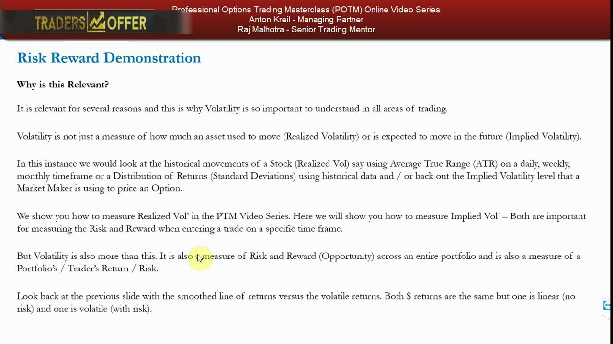
Two traders — measuring with the Sharpe ratio
- Trader 1: 30% annualized standard deviation of the portfolio, 20% return at year end.
- Trader 2: 13% annualized standard deviation, 19% return at year end.
- Simplified Sharpe ratio = annualized return ÷ annualized standard deviation.
- Trader 1 Sharpe = 20% ÷ 30% = 0.66; Trader 2 Sharpe = 19% ÷ 13% = 1.46.
- Trader 2 is the better trader — nearly the same return for far less risk (a much higher risk-adjusted return).
Standard deviation is the industry-standard measure of volatility. The Sharpe ratio formalizes 'return per unit of risk' — and by that measure the lower-return, lower-volatility trader is clearly superior.
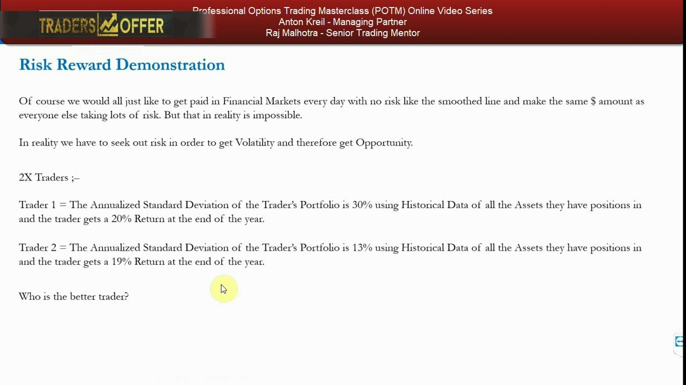
Sharpe benchmarks — and how to reach Trader 2
- Negative return → negative Sharpe: the bracket where ~95% of retail traders fall.
- Decent, profitable traders: positive Sharpe up to about 1.
- Good traders: Sharpe above 1; professionals aim above 1.5 and tend to cap out around 2; high-level algorithmic traders often achieve 1.5–3.
- A long-only portfolio in a bull market yields a Sharpe of around 1.
- Building diversified Long/Short portfolios reduces the risk component; adding options (at minimum put hedges on long-only books) lowers risk, maintains return, and smooths risk reward.
The whole demonstration points at one goal: gravitate toward Trader 2's profile. Long/Short structure plus options is how professionals raise the Sharpe rather than 'punting' long-only.
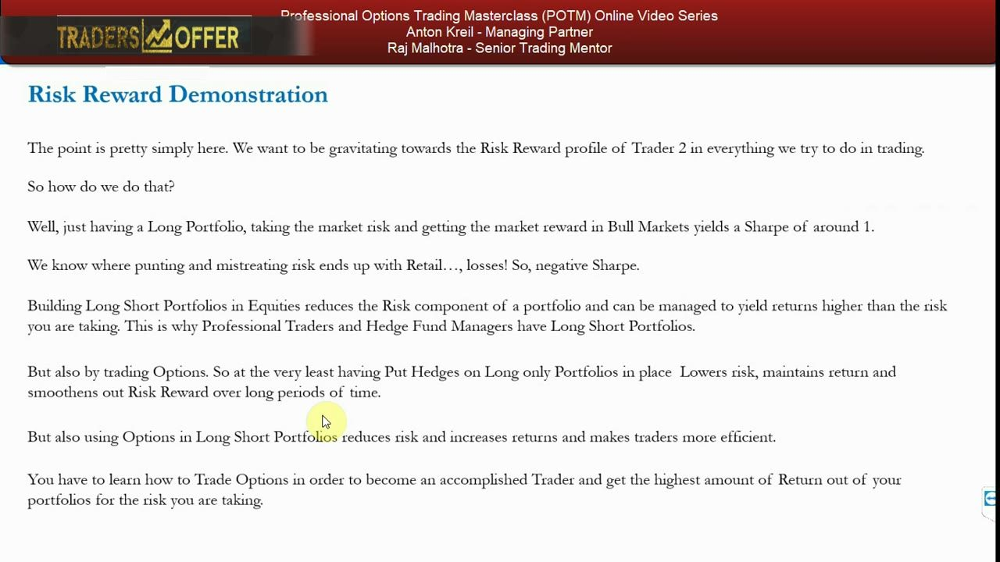
Why we must measure volatility — the only unknown
- The volatility of an underlying stock is a key factor in deciding whether to use options at all.
- Implied volatility is used to calculate the option's premium and is the ONLY unknown in options pricing.
- All other Black-Scholes inputs — spot price, strike price, risk-free rate, days to maturity, dividends — are simply known inputs.
- Understanding WHY volatility goes up and down is the single most important thing for a retail trader, but calculating realized and implied vol matters too.
- Market makers must price volatility themselves, using historical values and any upcoming catalysts inside the option's timeframe.
Because IV is the one debatable input, it's where disagreement — and opportunity — lives. If your research says vol should be higher or lower than the market implies, you can trade that gap.
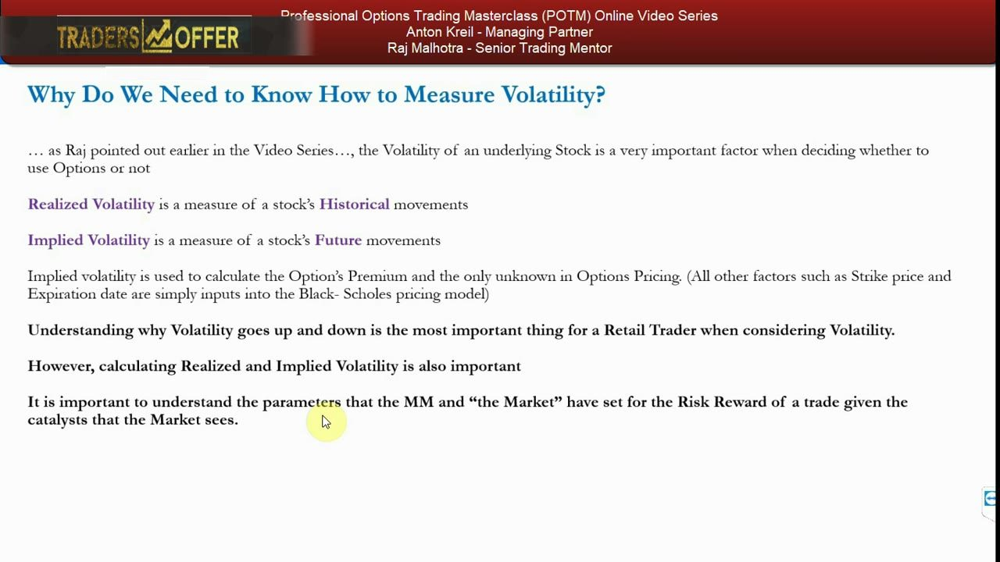
Term structure and catalysts — don't take IV for granted
- Longer time horizons raise an option's price — days-to-maturity is higher in the Black-Scholes calculation, and more can happen (risk AND opportunity).
- Implied volatility gravitates higher into publicly KNOWN catalysts like earnings, because they present uncertainty.
- If a catalyst turns out to be a non-event, volatility — and option prices — fall afterwards.
- Risk reward therefore becomes an assessment of catalysts AND volatility within the time horizon you're considering.
- The IV on your screen must be double-checked against your own calculations and critiqued against the catalysts you expect.
The volatility term structure means longer contracts cost more and carry more of both risk and opportunity. Anticipated events pump IV before them and bleed it after — so the horizon and the calendar of catalysts both drive the price.
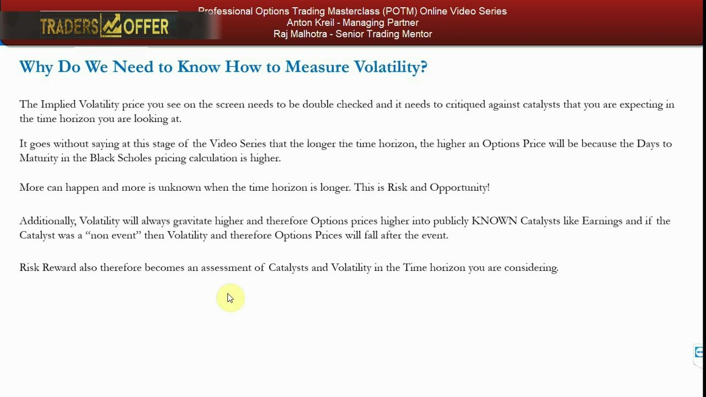
TSLA worked example — the option chain
- TSLA option chain: last ~$351.08, Bid 350.78, Ask 351.60, Hist Volatility 36.55%, volume 4,797,419.
- 350-strike calls: March 9th mid price ~$9, April 6th maturity ~$17.50, January 18th 2019 ~$55 (approximate figures).
- The 324-day January 2019 contract is priced about 6× higher than the 9-day and about 3× higher than the 37-day option.
- Annualized volatility is roughly the same for the 9-day and 37-day contracts, but 3–4 points higher for the 324-day contract.
- Dividends for the stock are zero — so everything is known except implied volatility; because IV values are annualized, they are comparable across horizons.
Most of the price step-up is days-to-maturity — more time means more can happen. But the longer contract also carries a slightly higher annualized IV, so it is genuinely being priced richer in volatility terms too.
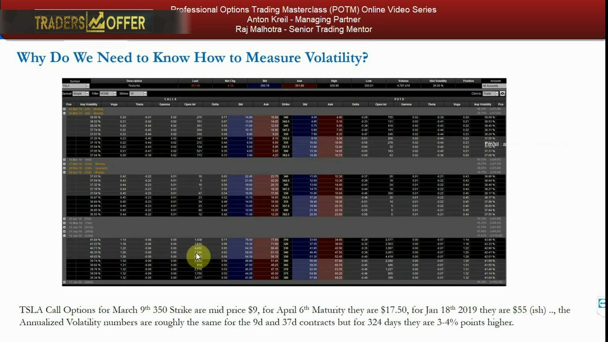
Don't just accept the market maker's number
- Why take for granted that the volatility level used is reliable and correctly discounts all known and unknown catalysts?
- Between the trade date and January 2019, Tesla will report 3 or 4 quarters of earnings and have multiple catalysts — announcements, product launches, problems — roughly every 1–2 weeks.
- Treat the platform's numbers as the market maker's assessment of where they are happy to trade volatility long and short; they hedge, so they don't care about direction.
- Buy an option at a higher IV than it deserves and the market maker can simply mark the price down the next day.
- The worst thing you can do is accept the valuations blindly — that is 'literally just writing checks to the market makers.'
The lesson closes on due diligence: measure IV yourself to confirm the platform is fair, judge it against the catalysts in the horizon, and only trade when the risk reward genuinely favours you. Video 21 shows how to calculate it.
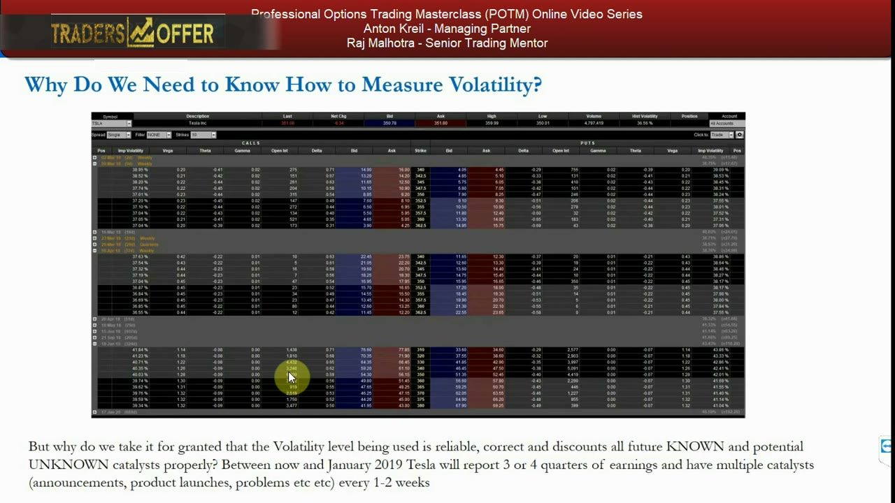
Glossary
- VolatilityThe fluctuations in an asset's prices and returns; a source of both risk and reward — without it there are no capital gains to make.
- Expected returnThe probability-weighted average of an outcome's payoffs, e.g. ($300×0.5)+(−$150×0.5) = $75 per coin toss.
- Realized volatilityA measure of a stock's historical movements, e.g. via ATR (daily/weekly/monthly) or the standard-deviation distribution of past returns.
- Implied volatility (IV)A measure of a stock's expected future movement, backed out of option prices; the only unknown input in the Black-Scholes model.
- Annualized standard deviationThe industry-standard measure of volatility — the statistical dispersion of returns, scaled to a one-year figure so horizons are comparable.
- Sharpe ratio (simplified)Annualized return ÷ annualized standard deviation; e.g. 20% ÷ 30% = 0.66, or 19% ÷ 13% = 1.46. Higher = better risk-adjusted return.
- Volatility term structureHow option prices and implied vol vary by maturity — longer horizons raise prices and often carry higher IV, because more can happen.
- CatalystA publicly known event (e.g. earnings) that lifts implied volatility into it; if the event is a non-event, IV and option prices fall afterwards.
- Black-Scholes inputsSpot price, strike price, risk-free rate, days to maturity, and dividends are all known; implied volatility is the only unknown, solved to get the premium.
- Market makerThe counterparty that prices and hedges options; they are direction-neutral and can mark implied vol down the next day, so their IV must be checked.